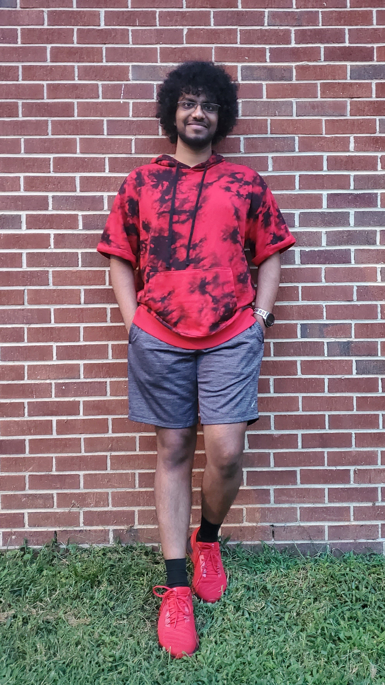

Who am I?
I'm Arjun! I'm a student researcher from NC State specializing in game development and tools. Understanding what the players want and making their plays more enjoyable and efficient is what I strive for. Be it improving gameplay, designing creative and unique gameplay mechanics, or even conducting user studies and trials, I can handle these tasks effectively. Having the end users visually acknowledge my work motivates me the most, and that drives me to do all I can in the games I work on.
Where do I shine?
My skills and experience in a variety of fields such as programming, creating media content, animations, and logical reasoning help me act as a great bridge between different teams. Having me as a mediator who understands both worlds to smooth out the communication between the sketch artist and the programmer would be a great asset to any company. The same set of skills allow me to be self-sufficient for most basic tasks, and at the same time help my teammates and coworkers from multiple disciplines. Check out the Skills page to see some design samples if you haven't already!
How do I spend my free time?
I love being amongst friends, whether we're out on a drive or just lying on the couch. Thanks to my "sure, let's try it!" attitude I can now play many kinds of sports if you're looking for company during the office break-times. I'm always in touch with my creative side, and I've recently picked up wood-working as well. If you're going to lakes, forests, someplace with a trail for my longboard, or just any serene place count me in. Bringing a skateboard along? Couldn't be better! I love to play dorky couch-party games such as Overcooked or Fall guys when I've got people around me, and if not I spend my nights playing Dota 2. Feel free to use the contact options below even if you're just looking for a video-game buddy!
How can you reach me?
You can reach through the contact form below, and I will get back to you right away. Alternatively, you can also contact me through any of my social accounts linked in the footer icons.